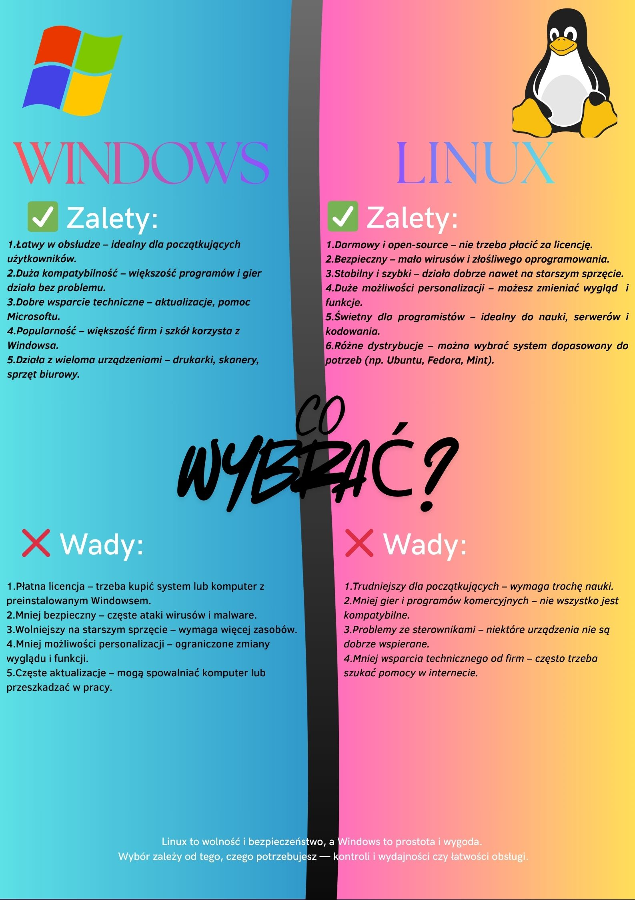
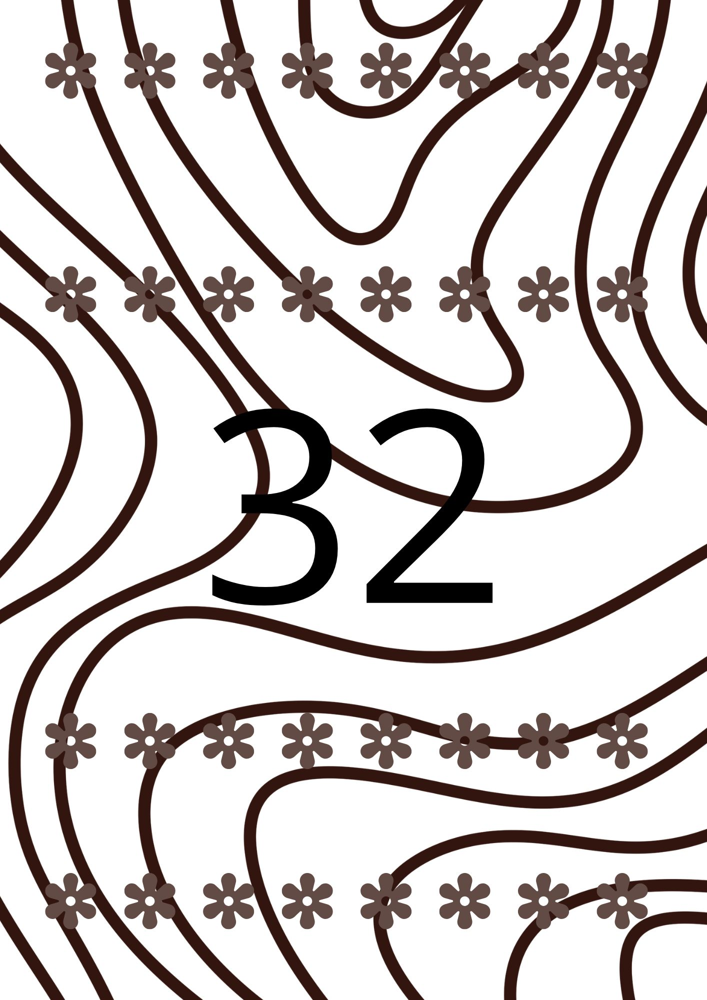
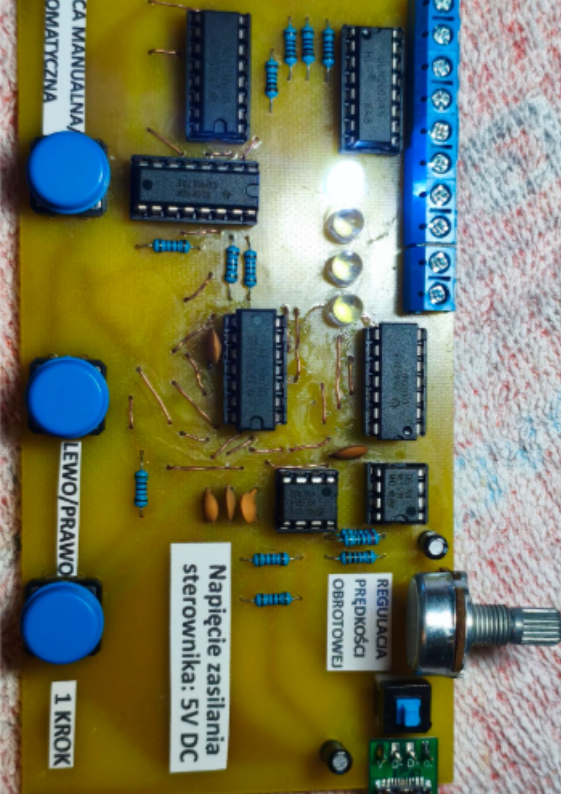

Prace graficzne
Projekty wykonane w programach graficznych Canva podczas lekcji.
Plakat

Plakat przedstawiający wady i zalety Linuxa oraz Windowsa
Karty Binarne

Jest to jedna z moich kart binarnych która służy do łatwiejszej nauki systemu binarnego
Projekty tekstowe i PDF
Opracowania, dokumenty cyfrowe oraz makiety gazet wykonane na lekcjach.
Prezentacja wyników ankiety
Prezentacja została stworzona w celu przedstawienia wyników własnej ankiety i pokazania jak wyniki się różnią
Otwórz plik PDFMateriały wideo
Reklama Szkoły
Film stworzony w celu promocji szkoły i zachęcenia nowych uczniów do rekrutacji.
Moduły zawodowe i inne
Projekty realizowane na przedmiotach zawodowych w szkole wraz z dokumentacją techniczną.
Sterownik Silnika Krokowego

Projekt Silnika Krokowego Unipolarnego na UISE
Otwórz dokumentację PDF